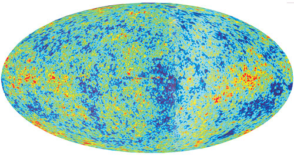

| Космология: конец или продолжение |
| Оперируемые размеры - миллиарды световых лет, что можно сказать после этого. Мы в начале? в
середине или уже в конце? И зачем нам все это? Воля Творца не учитывается во всех моделях и это правильно, посколько мы лишь частично знаем Его волю для нас, для нашей маленькой Земли и совершенно ничего не знаем о Его воле в отношении всей Вселенной. Бог предоставил нам чистое поле для исследований и гипотез. Я размещаю популярную статью-обзор состояния дел в этой области знания, помещенную в журнале "Знание-сила" Николай Потапов 2 апреля 2007г. |
|  | Карта Уилкинсона
После полуторагодичных наблюдений и анализа полученных данных авторы проекта МАП (микроволновый
анизотропный прощупыватель - так можно перевести с английского название космического зонда
Microwave Anisotropy Probe) опубликовали в середине февраля свои результаты, сведенные в новую
карту (английское "map") Вселенной. К этой карте прибавлена буква W в честь астрофизика
Уилкинсона, который был одним из инициаторов проекта, но, к сожалению, умер, не дождавшись его
результатов. |
|
Карта Уилкинсона - выдающееся достижении космологии. Она ответила на ряд до сих пор спорных
вопросов, жизненно важных для понимания истории и структуры видимой части Вселенной. Даже
краткое перечисление этих результатов позволяет понять, какой огромный шаг сделала теперь наука
о космосе.
Окончательно выяснено, что возраст Вселенной 13,7 миллиарда лет (вокруг этого вопроса в течение многих десятилетий ломались многие копья). Эта цифра помогает точно определить и одну из важнейших космических констант, так называемую постоянную Хаббла, которая показывает скорость расширения нашей Вселенной (а заодно позволяет определять расстояния в ней), - она составляет 71 километр в секунду на каждый мегапарсек расстояния (парсек - это 3,26 световых лет). Иными словами, границы участка диаметром в один мегапарсек каждую секунду расширяются на 71 километр. Окончательно установлено также, что пространство Вселенной геометрически плоское (будь оно искривленным как целое, оно бы действовало наподобие гигантской линзы, увеличивая или уменьшая видимые размеры различных участков Вселенной). Доказано также, что масса Вселенной состоит на 4 процента из массы обычного вещества (атомов, собранных в звезды или облака межзвездного вещества), на 27 процентов - из так называемого темного вещества, природа которого до сих неизвестна (ясно лишь, что это необычное вещество, так как оно не способно излучать свет) и на остальные 70 процентов - из так называемой темной энергии тоже неизвестной природы; это энергия какого-то загадочного поля, из-за "распирающего" действия которого Вселенная расширяется не равномерно или замедленно, а ускоренно. Наконец, доказано, что Вселенная родилась в результате Биг Бэнга (Большого Взрыва), за которым почти немедленно последовал период чудовищно быстрого расширения (инфляции), в результате которого она в основном и достигла нынешних огромных размеров, а спустя примерно 200 миллионов лет после окончания инфляции во Вселенной появился первый свет то ли от гигантских звезд, то ли от черных дыр. Трудно переоценить эти результаты. Они ставят всю космологию на надежный эмпирический фундамент, позволяя ей отныне не барахтаться в тине нескончаемых споров противоречивых теорий (был Биг Бэнг или нет, была инфляция или не было, плоско или искривлено наше пространство, существует "темное вещество" или это результат неприменимости ньютоновых законов к галактикам, как утверждал, например, израильский ученый Мильгром, когда возникли первые звезды, и так далее). Отныне карта Уилкинсона станет пробным оселком любых новых теоретических гипотез - тех, что не согласуются с ее выводами, можно будет сразу отбросить. Около двадцати лет назад с помощью исследовательского спутника КОБЕ была составлена первая пространственная карта Вселенной. Данные КОБЕ были огромным шагом вперед в изучении процесса рождения Вселенной, но, к сожалению, эта карта не давала возможности изучить тончайшие детали раннего строения Вселенной, потому что приборы этого зонда не обладали достаточной чувствительностью. Поэтому многие вопросы остались спорными, что и позволило ученым выдвигать конкурирующие гипотезы. Чувствительность приборов спутника МАП, оснащенного двумя полутораметровыми телескопами (и наблюдавшего космос в идеальной пустоте на расстоянии полумиллиона километров от Земли), была в 20 раз выше, что и позволило "разглядеть" многие важнейшие особенности пространственного распределения остаточного излучения. На карте КОБЕ были видны участки, отличающиеся по температуре примерно на 25 миллионных градуса. Карта МАП позволила как бы "приблизиться" к этим участкам (сделать то, что в фотографии называется "зум") и увидеть, что они состоят из еще более мелких участков, температуры которых различаются на 2-2,5 миллионных градуса. По мере такого "приближения" эти вариации то нарастают, то спадают, образуя на диаграмме пики и провалы. Такие пики (их называют "акустическими") рассказывают ученым, что соответствующие комки первичной материи разрастались или "коллапсировали" по-разному, причем характер этих процессов был различен в зависимости от того, состоял данный комок из обычного или "темного" вещества. Так было вычислено содержание этих двух видов вещества в нынешней Вселенной. Попутно оказалось, что размеры самих неоднородностей примерно одинаковы, а значит, Вселенная не увеличивает одни из них и не уменьшает другие, что должно было быть в "изогнутом", как линза, пространстве, и, следовательно, пространство Вселенной является плоским. Это, в свою очередь, подкрепляет инфляционную гипотезу, поскольку чудовищное раздувание пространства в ходе инфляции должно было "раскатать" его, как хозяйка раскатывает тесто, - в плоский лист. Но окончательный вывод в пользу теории инфляции дали данные о поляризации остаточного излучения. Электромагнитная волна называется поляризованной, когда стрелка, указывающая направление ее электрического поля, имеет одно определенное направление (или это направление меняется по кругу). Инфляционная теория предсказывает, что степень поляризации должна быть больше в тех участках карты излучения, где вариации меньше, а конкурентные теории предсказывают обратное. Оказалось, что реальное положение дел соответствует предсказаниям теории инфляции. С помощью тех же данных по поляризации остаточного излучения в разных микроучастках карты удалось вычислить и момент появления первых звезд или черных дыр во Вселенной - 200 миллионов лет после ее "рождения". Раньше полагали, что это произошло через 500 миллионов лет после Биг Бэнга. Разумеется, все эти выводы (как, кстати, и заключение о возрасте Вселенной) не были просто "прочитаны" по карте Уилкинсона. Исследователи с помощью компьютеров построили десятки тысяч (!) моделей рождения и развития Вселенной, последовательно сверяя предсказания каждой такой модели с данными наблюдений, сведенных в карту МАП. Поэтому за их выводами стоит такой массив доказательств, который так же трудно поколебать, как, например, данные по недавней расшифровке генома человека. В сущности, это близкие по своему значению для науки результаты - как расшифровка человеческого генома подводит фундаментальную базу под все дальнейшее изучение биологии человека, его поведения и болезней, так карта Уилкинсона подводит такую же фундаментальную базу под дальнейшее изучение Вселенной, в которой мы живем. |
Хватит ли нам загадок?
Космологи еще празднуют недавний успех, а уже слышатся голоса скептиков: не станут ли они жертвами собственного триумфа? Триумф состоит в том, что первые данные, полученные космическим зондом Уилкинсона, убедительно подтвердили общую справедливость той картины "инфляционной Вселенной", которую космологи выстраивали теоретически в течение последней четверти века. Зонд Уилкинсона дал в руки космологов большинство недостающих деталей. В результате по его данным удалось рассчитать основные параметры нашей Вселенной. Они в основном совпали с теоретическими предположениями и позволили уточнить многие из них. Таким образом, космология сделала огромный шаг вперед. Откуда же пессимистические предчувствия? Дело в том, что хотя в полученной теперь космологической картине есть еще много лакун, но почти все они относятся уже к ведомству физики, астрономии и астрофизики. Поэтому кое-кому представляется, что с точки зрения собственно космологии все загадки вроде бы решены, получившаяся картина охватывает всю историю Вселенной от ее рождения до смерти и потому космологии как науке вроде бы пришел конец. Как уже не раз бывало в науке, этот скептицизм оказался весьма преждевременным. Серьезные комментаторы уже отметили, что и после зонда Уилкинсона у космологии остается огромное поле работы. Более того, некоторые результаты, полученные при анализе первых данных этого зонда, ставят перед наукой новые, неожиданные вопросы и уже подсказывают новые направления исследований. Так, ведущие американские космологи Штейнхардт, Острайкер и другие в своем комментарии к "Карте Уилкинсона" обращают внимание на два загадочных обстоятельства. Во-первых, на этой карте (напомним, что она изображает распределение температуры остаточного космического излучения во всем пространстве Вселенной) как будто бы проглядывает неодинаковость излучения, приходящего с разных направлений Вселенной; во-вторых - предварительный анализ данных этой карты как будто бы позволяет сделать определенный вывод о характере таинственного поля "темной энергии". Попробуем пояснить оба эти замечания. Первое из них сводится в конечном счете к тому, что в одном определенном направлении Вселенной спектр волн, рассеянных на первичных флуктуациях плотности, не таков, как в других направлениях. Грубо говоря, он содержит волны не всех возможных длин, как это должно было быть в бесконечном пространстве, а обрывается на некоторой максимальной длине. Наглядной иллюстрацией сказанного была бы колеблющаяся струна конечной длины. На испускающей звуковые волны струне могут, как известно, укладываться лишь такие волны, длина которых (расстояние между двумя последовательными гребнями или впадинами) точно равна длине самой струны или точно вдвое меньше той длины, или вчетверо меньше и так далее. Волны, длины которых больше, чем длина струны, попросту на ней не уместятся, и в спектре звуков, испускаемых этой струной, таких волн не окажется. Эта особенность "Карты Уилкинсона", подмеченная Штейнхардтом и Острайкером, бросилась в глаза и некоторым другим космологам, и трое из них, Макс Тегмарк, Анвилика де Оливьера-Коста и Эндрью Гамильтон из США, выступили в конце февраля нынешнего года в Интернете со статьей, в которой уже попытались дать объяснение загадки. "Если эта неодинаковость остаточного излучения, приходящего с разных сторон, - пишут они, - не является следствием некой статистической ошибки или результатом наложения радиошумов, то она может быть вызвана тем, что в том направлении, где наблюдаются волны лишь до определенной максимальной длины, наша Вселенная имеет конечные размеры, как имеет их описанная выше колеблющаяся струна". Можно ли наглядно представить себе эту картину? Можно - утверждают авторы, если допустить, что трехмерное пространство нашей Вселенной "свернуто" наподобие бесконечно длинного цилиндра или в виде "тора", то есть цилиндра, свернутого и соединенного концами (проще говоря - в виде бублика). Разумеется, такое свертывание трехмерного объема до конечных размеров в одном направлении может произойти только в "пространстве" четырех или более измерений (точно так же плоский, двумерный лист бумаги можно свернуть в цилиндр лишь в третьем измерении). Надо заметить, что подобная гипотеза - правда, чисто умозрительно, без привязки к каким бы то ни было экспериментальным данным - уже выдвигалась в 1984 году в России Я. Зельдовичем и А. Старобинским, а позднее - американскими математиками Сэрстоном и Уиксом. Но теперь такая модель впервые выдвигается на серьезное обсуждение как возможное объяснение наблюдательных результатов. Понятно, что это открывает совершенно новые горизонты в космологии, понуждая к детальному теоретическому исследованию последствий такого предположения и возможности его экспериментальной проверки. Одна такая возможность, как указывают Тегмарк и его коллеги, напрашивается сразу. Вселенная, имеющая форму четырехмерного цилиндра или тора, должна быть бесконечной при движении вдоль "бублика" и конечной - при движении поперек него. Поэтому свет, распространяющийся вдоль оси такой Вселенной, должен периодически возвращаться к источнику, иными словами - астрономы должны видеть одни и те же космические объекты по много раз, как будто находятся в зале со стоящими друг против друга зеркалами. Наличие такого эффекта поддается экспериментальной проверке, и в печати уже появились первые предложения, как это сделать. |
От "Большого Шепота" -до "Большого
Разрыва"
Вторая загадка "Карты Уилкинсона" связана с вопросом о природе так называемой темной энергии. Это понятие появилось в нынешней космологии в результате последовательного развития идей А. Эйнштейна. Сразу же по завершении своей теории тяготения в 1916 году Эйнштейн попытался применить ее выводы к Вселенной как целому. Оказалось, что уравнения его теории допускают простое и изящное решение в виде статичной и однородной сферической Вселенной, но лишь в том случае, если "насильственно" дополнить их неким постоянным членом, некой "космологической постоянной", которую он обозначил греческой буквой "ламбда". Физический смысл этой постоянной был очевиден сразу. Поскольку взаимное притяжение частиц вещества друг к другу должно стягивать Вселенную в точку, сферическая модель будет статичной лишь в том случае, если силе тяготения будет противодействовать равная ей и противоположная по направлению "сила расширения". "Ламбда" как раз и характеризует физическое поле, порождающее эту силу. Статичная модель Эйнштейна продержалась недолго, потому что уже несколько лет спустя петербургский математик А. Фридман показал, что уравнения теории тяготения Эйнштейна допускают и другой класс решений, которые описывают расширяющуюся или сжимающуюся Вселенную, а вскоре наблюдения американского ученого Хаббла подтвердили, что она вместе с ее пространством действительно расширяется. Какое-то время казалось, что это расширение является следствием первичного Большого Взрыва и что Вселенная в конце концов снова начнет сжиматься, закончив свою жизнь "схлопыванием" ("коллапсом") всех атомов и элементарных частиц в одну безразмерную точку с бесконечной плотностью и температурой. Этот сценарий конца Вселенной получил название "Большого Хруста". Затем выяснилось, что вещества во Вселенной - даже с учетом "темного вещества" -слишком мало, чтобы заставить ее вновь сжиматься (данные "Карты Уилкинсона" это, кстати, подтвердили), и возобладало представление, что она будет расширяться до бесконечности, закончив свою жизнь не "Большим Хрустом", а "Большим Шепотом", когда все ее вещество, вплоть до последних атомов и частиц, истончится до нуля. Наконец, совсем недавно, при изучении сверхновых звезд, было обнаружено, что Вселенная не просто расширяется, а делает это ускоренно, как будто в ней существует какое-то невидимое "распирающее" поле, не могущее быть уравновешенным наличным полем тяготения. Энергия этого невидимого поля получила название "темной", и, постулировав его существование, космология как бы описала круг и вернулась к ранее отброшенной эйнштейновой "космологической постоянной". Известно, однако, что такие возвращения, как правило, происходят на новом уровне понимания, и в этот раз космология вернулась к "расширяющему полю" с пониманием того, что оно может быть не только статичным, в духе предположения Эйнштейна, но и переменным во времени и в пространстве. К настоящему времени сложилось убеждение, что переменное поле "темной энергии" тоже удовлетворяет уравнениям теории тяготения. Так вот, вторая особенность, подмеченная на "Карте Уилкинсона" Штейнхардтом и другими, состоит в том, что ее данные как будто бы лучше согласуются с предположением, что "темная энергия" существует именно в виде "квинтэссенции", то есть может меняться со временем и иметь различные значения в разных участках пространства. Обе эти возможности приводят к далеко идущим выводам. Переменность "расширяющего поля" в пространстве может означать, что Вселенная расширяется не вполне равномерно, и возникает необходимость более точного и детального экспериментального изучения скорости ее расширения по всем направлениям. Что же касается переменности расширения во времени, то оно может привести к еще более катастрофическим последствиям. Эту возможность детально исследовал американский астроном Колдвелл. В начале нынешнего года он выступил в журнале "Physical Review" со статьей, в которой рассматривает ход расширения Вселенной в случае, если поле "квинтэссенции" будет быстро нарастать со временем. Результаты расчетов Колдвелла приводят к радикально новому сценарию конца Вселенной, отличному не только от сценария "Большого Хруста", но и от варианта "Большого Шепота". По Колдвеллу, этот список нужно дополнить также возможностью "Большого Разрыва". Действительно, если загадочное поле "темной энергии" ("квинтэссенции"), которое ускоряет расширение Вселенной, не остается постоянным, а напротив, все более нарастает по мере этого расширения, то в какой-то момент оно может (и должно) достичь таких значений, что наступит некий "обвал": процесс бесконечного ускоренного истончения вещества сменится стремительным "распарыванием", "разрывом", своего рода "антиколлапсом" всего существующего, который закончится не в бесконечности, как полагали раньше, а во вполне обозримое, конечное время. По расчетам Колдвелла, в самом экстремальном варианте нарастания поля "квинтэссенции" конец Вселенной наступит через 22 миллиарда лет, считая от нынешнего момента. При этом за 60 миллионов лет до этого живущие тогда существа станут свидетелями неудержимого и стремительного распада всех галактик, включая наш Млечный Путь: из-за неудержимого расширения пространства звезды, составляющие эти галактики, начнут разлетаться во все стороны и вскоре (в астрономических масштабах времени, разумеется) бесследно исчезнут в расширяющейся вокруг темноте. За три месяца до "конца света" скорость расширения пространства возрастет настолько, что начнут стремительно удаляться друг от друга планеты, составляющие нашу Солнечную систему (если она, конечно, будет еще тогда существовать). За 30 минут до вселенского конца начнет вспучиваться и распухать само вещество Земли, чтобы через считанные секунды взорваться и рассеяться на отдельные атомы. А за ничтожно малое время до гибели Вселенной (по расчетам Колдвелла, это произойдет за 10-19 секунд до конца) взорвутся атомы, потом их ядра, потом частицы, составляющие эти ядра, а потом и кварки, составляющие эти частицы. И наконец, с последним ударом космического колокола, возвещающего, что 22 миллиарда лет истекли, Вселенная обратится в ничто. Чудовищный прогноз, конечно, но и в нем есть свои светлые стороны. Как утверждает Колдвелл, нарастающее "поле расширения" может породить весьма непредвиденный и заманчивый своими перспективами феномен. Те "червячные туннели" в пространстве-времени, существование которых предсказывает эйнштейнова теория тяготения (и отверстиями которых некоторые физики считают "черные дыры"), тоже должны будут расширяться, а не мгновенно "захлопываться", как предсказывает сегодня та же теория. А поскольку эти туннели, как считают некоторые теоретики, соединяют кратчайшим путем сколь угодно отдаленные точки пространства (и времени!), то в их широко распахнувшиеся глотки смогут устремиться космические корабли будущих разумных существ, чтобы совершать любые дальние путешествия не только в пространстве, но и во времени. Тут, конечно, возникает всегдашний вопрос: почему же эти будущие разумные существа до сих пор не заявились и к нам - ну, хотя бы сообщить о правоте или неправоте гипотезы Колдвелла? Такой визит мог бы сэкономить нашим космологам время, которое отделяет их от возможной проверки этой гипотезы собственными силами, ведь запуск того очередного космического зонда, с помощью которого они надеются произвести такую проверку, намечен лишь на конец нынешнего десятилетия. Впрочем, у космологов есть утешение. Как видно из сказанного, науке космологии, вопреки утверждениям пессимистов, явно не грозит преждевременный конец из-за недостатка новых вопросов, проблем и загадок. И, соответственно, нам с вами тоже еще будет чему удивляться. Рафаил Нудельман http://www.znanie-sila.ru/online/issue_2410.html |